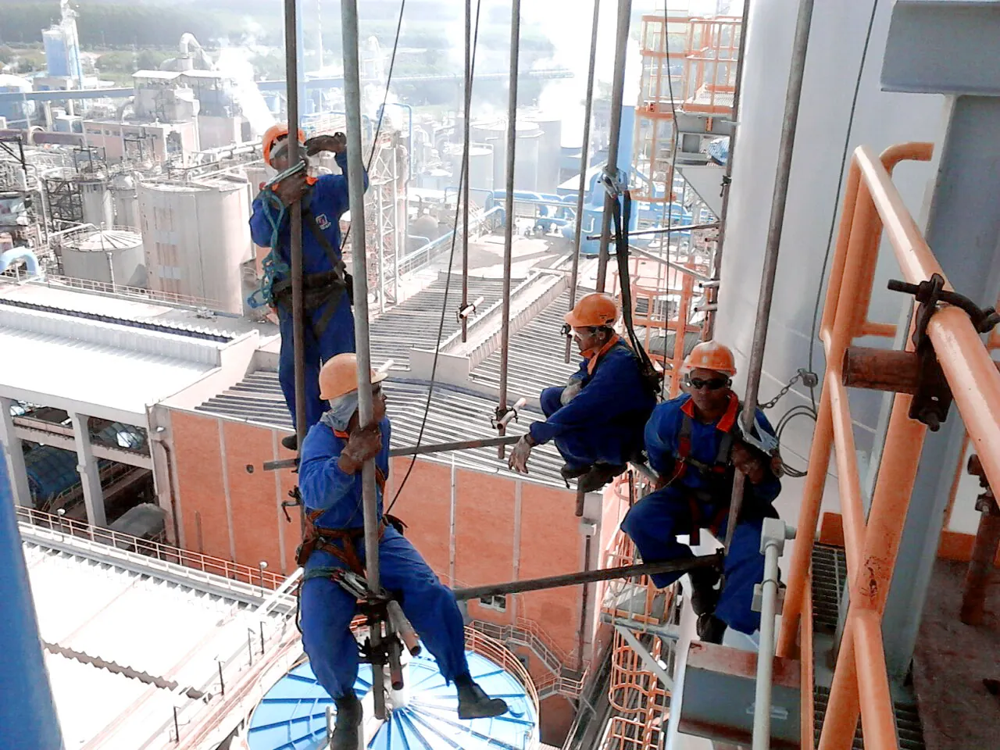

Locação de andaimes
Andaime multidirecional, fachadeiro e tubo e braçadeira, com material próprio, saído do pátio em Aracruz. O material fica alocado na obra durante o contrato.
Atendimento em Fundão
Fundão fica entre Aracruz e a Serra, no caminho do litoral. É passagem da equipe da Tec Lit em quase toda obra na Grande Vitória, o que faz do município uma das regiões de resposta mais curta do atendimento.

Como chegamos
O município fica no eixo da ES-010, entre a orla de Aracruz e a região de Nova Almeida, na Serra. A sede, em Timbuí, está no interior, e a faixa de praia fica a leste.
A ligação com a BR-101 é curta, o que permite atender tanto obra local quanto frente na Grande Vitória no mesmo deslocamento.
A Tec Lit trabalha com um endereço só, em Aracruz. Não existe filial em Fundão. O material vai para a frente de serviço e fica alocado lá enquanto durar o contrato.
| Região | Litoral do Espírito Santo, entre Aracruz e a Serra |
|---|---|
| Acesso principal | ES-010 pelo litoral, com ligação à BR-101 |
| Saída do material e da equipe | Aracruz, ES |
| Distância e tempo de Aracruz | [[PENDENTE: distância e tempo de aracruz]] |
| Prazo de mobilização | [[PENDENTE: prazo de mobilização]] |
| Horário de atendimento | Segunda a sexta, horário comercial |
Os campos marcados como pendentes saem da documentação técnica e entram assim que o documento for liberado. Nenhum número foi estimado.
Obra na região
A economia mistura agricultura, pequena indústria, comércio e turismo de praia, com movimento forte de construção e reforma no verão.
A demanda de andaime aparece em obra residencial, pousada, prédio de veraneio, galpão, igreja e manutenção de telhado, além de serviço em propriedade rural. É obra de altura moderada, em que o fachadeiro e a torre de acesso resolvem a maior parte dos casos.
A faixa litorânea tem um agravante que muda o planejamento: a maresia. Construção de frente para o mar precisa de manutenção mais frequente em pintura, revestimento e estrutura de concreto, e o material de andaime que fica exposto por muito tempo exige inspeção mais atenta na devolução.
A janela de obra também segue a temporada. Serviço em imóvel de veraneio se concentra fora do verão, quando a casa ou o prédio está vazio, e isso concentra a agenda de montagem em poucos meses do ano.

Cobertura
Atendemos a sede, a faixa litorânea e a zona rural do município.
Serviços
Andaime multidirecional, fachadeiro e tubo e braçadeira, com material próprio, saído do pátio em Aracruz. O material fica alocado na obra durante o contrato.
Equipe própria de montadores, conforme NR 18 e NR 35. Pode ser contratada junto com o material ou separada, quando a obra já tem equipe capacitada.
Venda de andaime e de componentes para quem usa acesso com frequência e prefere ter material próprio, com reposição fabricada na mesma casa.
Fabricação própria de andaime, peça sob medida e estrutura metálica, com maquinário de corte a laser para tubo e chapa.
Perguntas frequentes
Atendemos. Reforma de telhado, pintura, fachada e estrutura de laje são serviços comuns. O andaime entra com plataforma completa, guarda-corpo e rodapé, mesmo em obra pequena.
Pode ser. A empresa tem equipe própria e o serviço é contratado junto com o material ou separado. Veja montagem de andaimes.
Sim, desde que a base seja regularizada e nivelada com sapata ajustável, sobre apoio firme. Terreno em declive é justamente onde o multidirecional se ajusta melhor.
A NR 18 atribui o dimensionamento da estrutura e da sua sustentação a profissional legalmente habilitado. Em obra sob responsabilidade de construtora, isso já faz parte do escopo. Veja segurança e normas.
Atendemos toda a extensão do município, da sede em Timbuí à faixa litorânea. Em obra de praia, o acesso do caminhão até o ponto de descarga precisa ser verificado antes, porque rua estreita e piso de areia limitam a aproximação do material.
Outras cidades
A locação cobre todo o estado, com saída da base em Aracruz. Venda e fabricação atendem também fora do Espírito Santo.
Orçamento
Informe altura, área aproximada, tipo de serviço e a data prevista. Se já tiver a lista de material, anexe no pedido de orçamento.